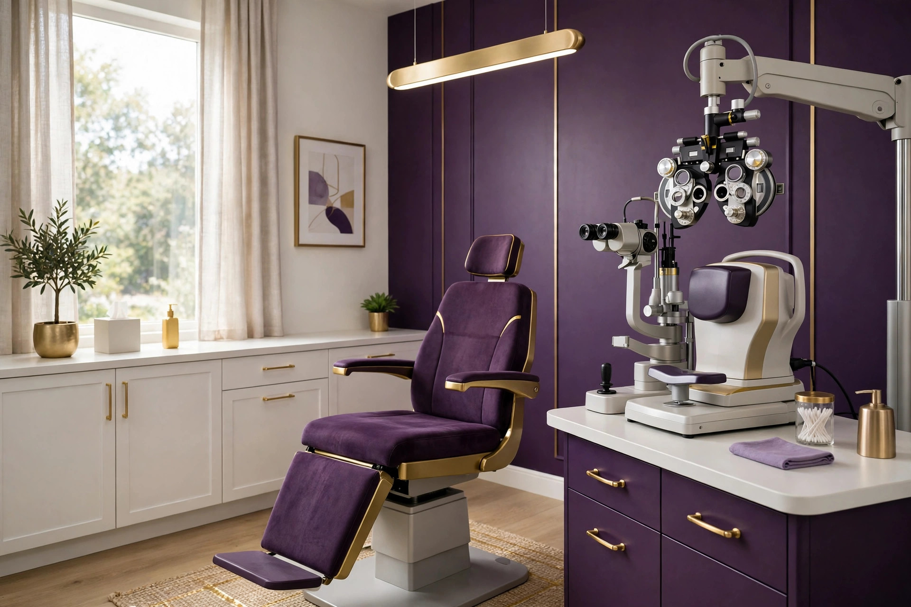
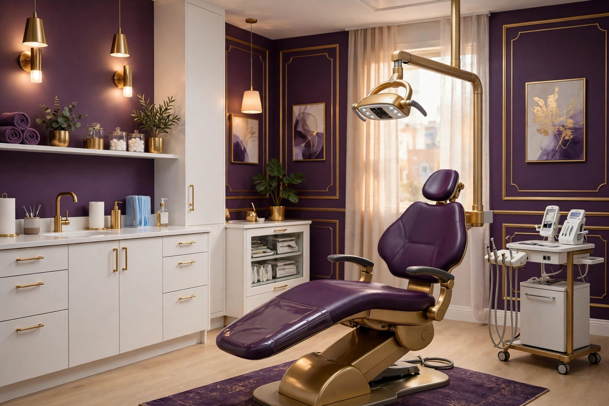

Psychotherapeutic Department
A calm space for talking therapy and mental-health support. You write to us, the AI drafts a careful reply, a specialist approves it — and your appointment is booked.
Clinic 51 — AI receptionist for clinics: AI drafts the reply, a human approves in seconds, visitors become appointments.
Clinic 51 is the clinic of the CLUB51 family. Its front desk is an AI receptionist: you write to us, the AI drafts the reply, a human specialist approves it in seconds, and your visit is booked. No phone queues, no lost messages — every request becomes an appointment.
Send a message from any page, in your language, any time.
The AI reads your request and drafts a careful answer.
A specialist checks the draft and approves it.
Your visit is booked. No phone queues, no lost messages.
A calm space for talking therapy and mental-health support. You write to us, the AI drafts a careful reply, a specialist approves it — and your appointment is booked.

Eye care and vision checks — from a first question about your eyesight to a booked examination. The AI takes your request, a specialist confirms it.
Care for the whole family — from a child's first check-up to an adult's regular visit. One message is enough to start.

Cosmetic dentistry and dental implants — our focus. Ask about a smile consultation or an implant plan; the AI drafts the reply and a specialist approves it in seconds.